Why structure, not a smarter model, is what makes knowledge work with AI. The argument, and where it comes from. Newest first.
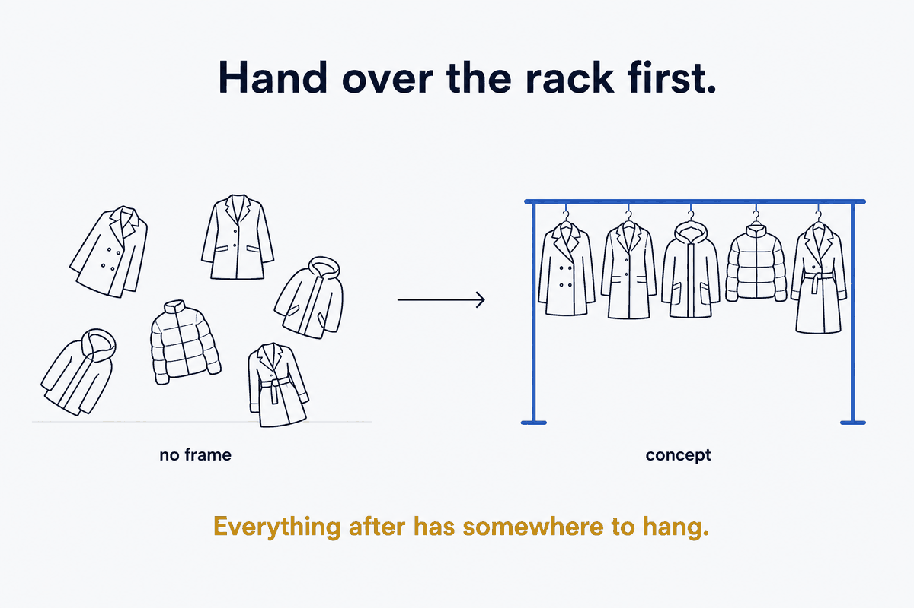
Structure Beats MagicA named idea is a coat rack. Give someone the rack in two minutes and every example afterwards has somewhere to hang — without it, each new detail lands on the floor.
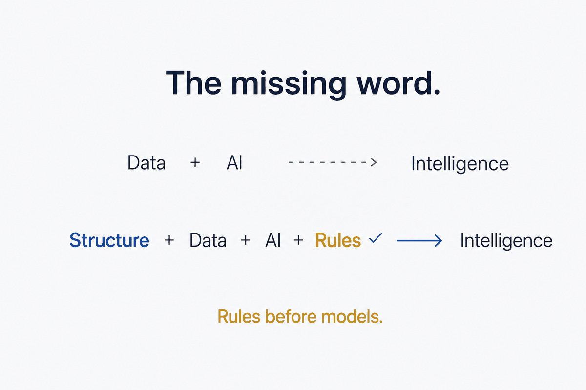
For knowledge workersEveryone sells you data and AI. The pair is unstable on its own. The thing that makes it trustworthy is the word nobody puts on the slide: rules.
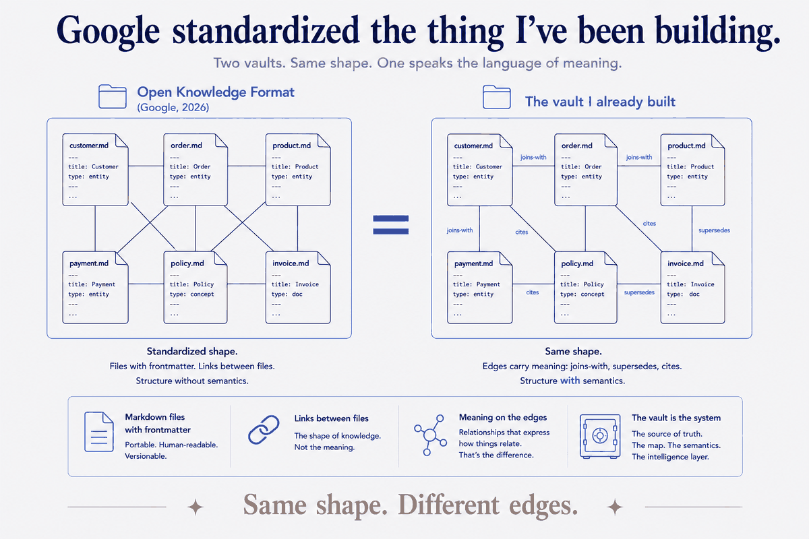
Structure Beats MagicGoogle Cloud's Open Knowledge Format turns your data's context into a folder of markdown files with frontmatter — the exact architecture I built for my own knowledge. It's the right shape. But its relationships are untyped, and untyped is where a knowledge graph quietly stops being trustworthy. The missing layer has a name: rules.
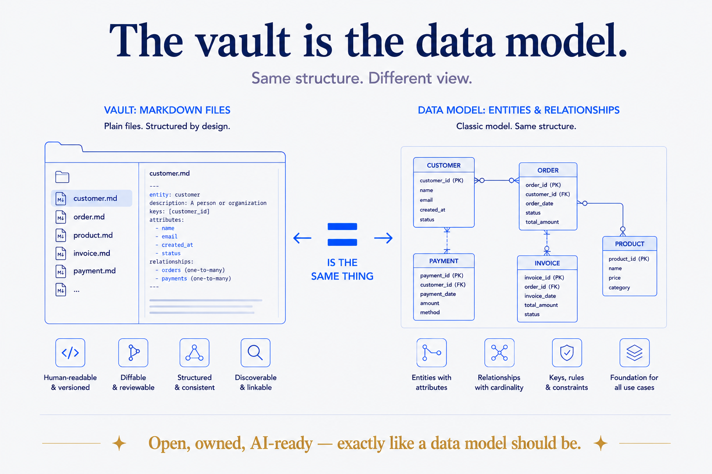
Structure Beats MagicA folder of markdown files doesn't hold a model of my knowledge. It is the model — atomic, self-describing, open, queryable. After 25 years of data modeling, I finally built one for myself, and it works exactly like the enterprise kind.
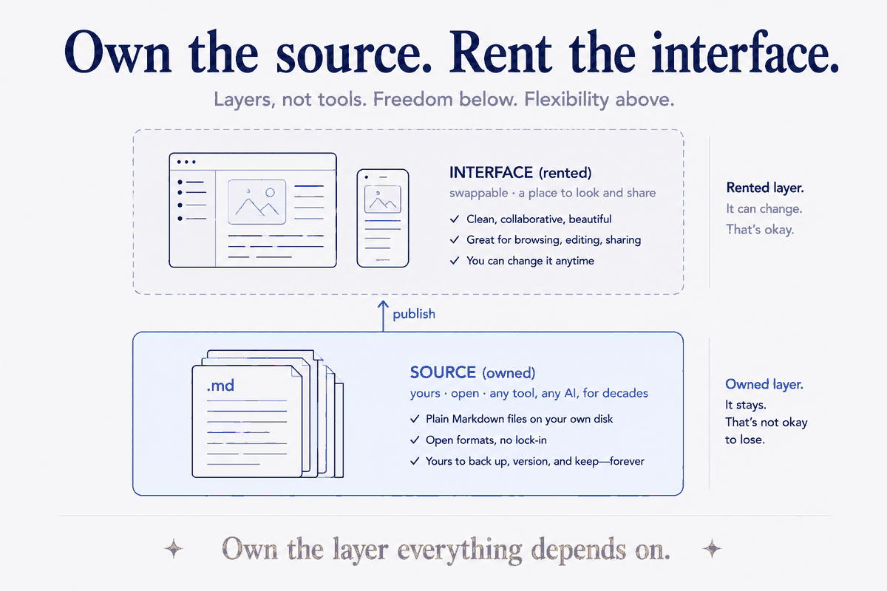
For knowledge workersObsidian or Notion is the wrong question. The right one is: which layer is this? One holds your knowledge in plain files you own; the other is a lovely place to look at it. Confuse the source with the interface and you've handed away the thing your whole system depends on.
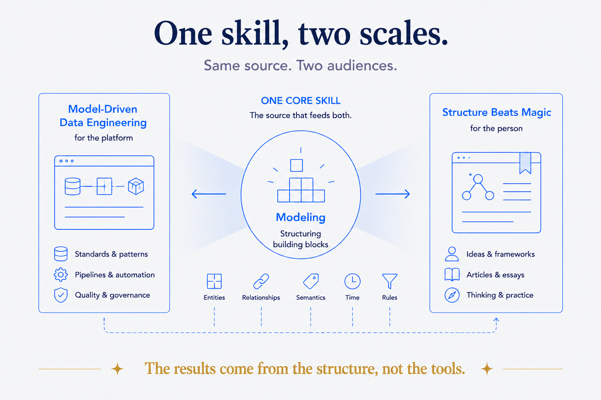
Structure Beats MagicI've spent a career doing one thing under many names: taking something complex and giving it a structure everyone can see. I'm widening where I write about it — here's how, and the sabbatical behind it.
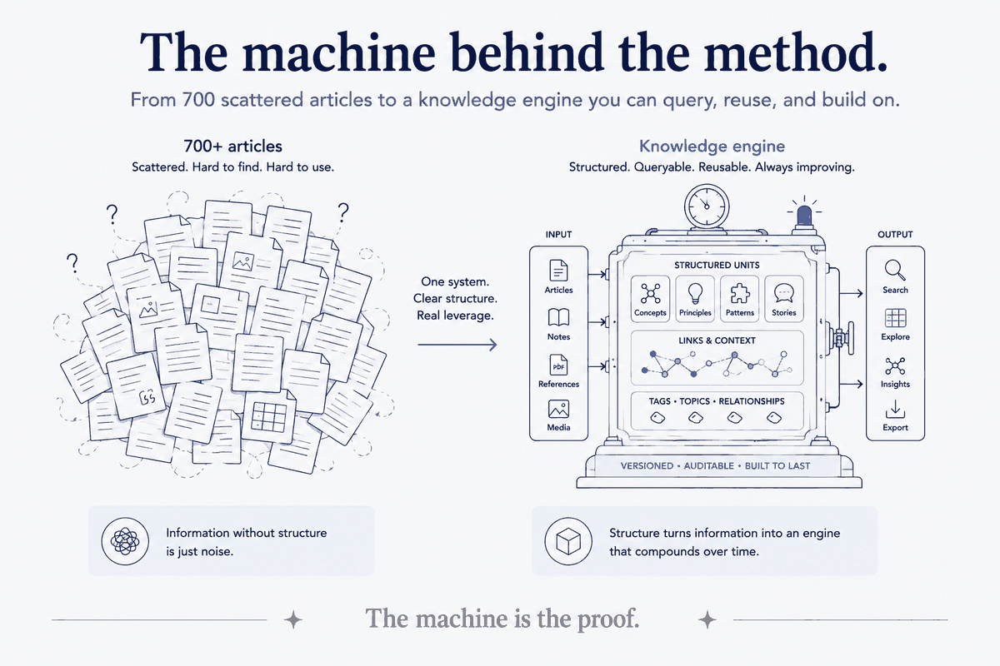
For knowledge workersSeven hundred scattered articles don't become a knowledge engine by accident. They become one because you build the machine — and the machine is the proof.
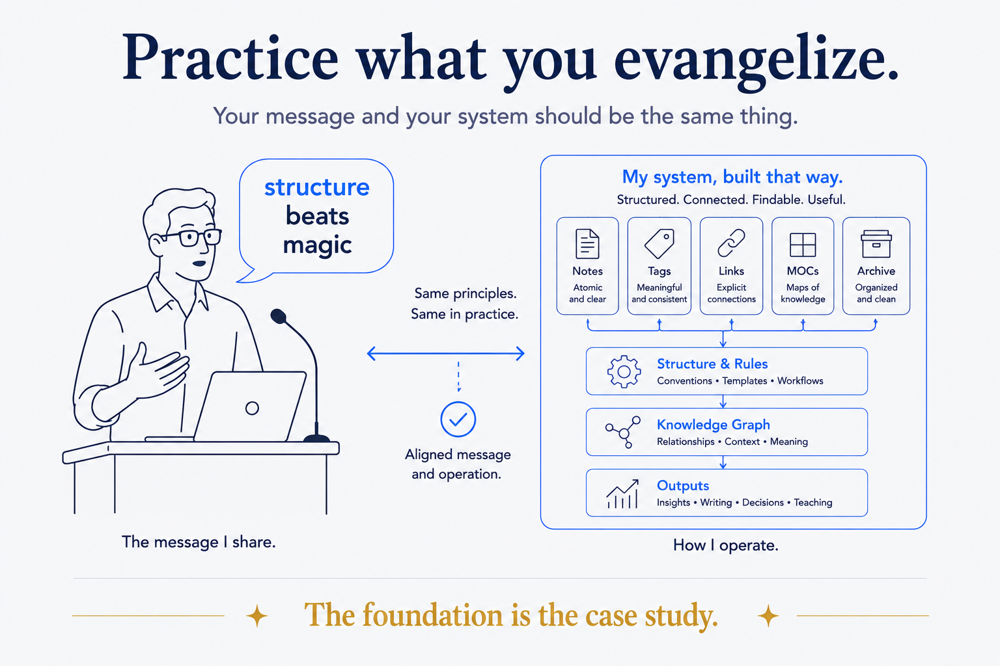
For knowledge workersIf you tell people structure beats magic, your own operation has to be built that way — or the message is hollow. The foundation is the case study.
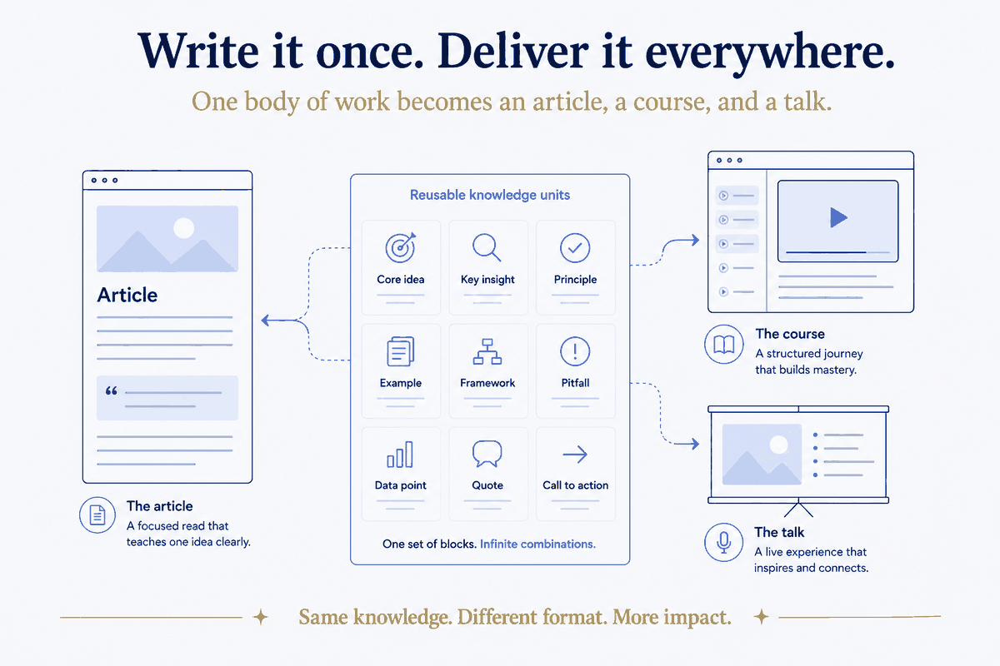
For knowledge workersZettelkasten, arrived at its conclusion: when your knowledge is stored as reusable units, one body of work becomes an article, a course, and a talk — without ever rebuilding it.
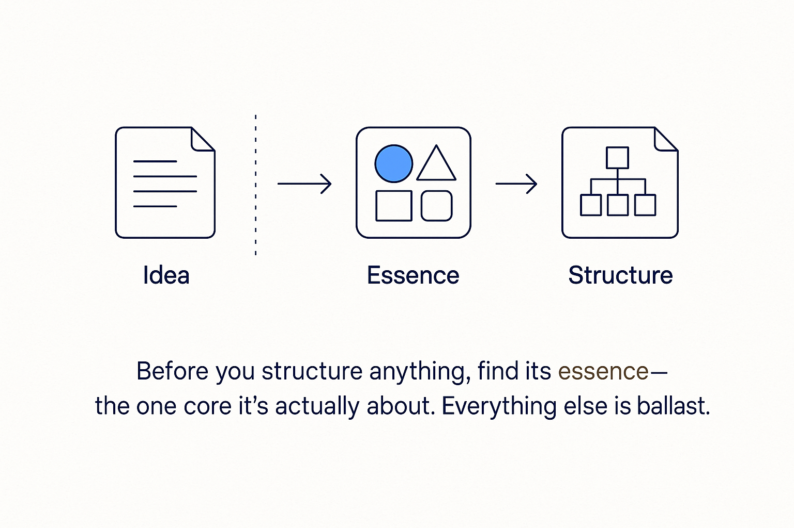
For knowledge workersStructure and deliberate get the credit. But essence is the drive underneath both — the thing that decides what deserves structure and what's worth choosing at all.
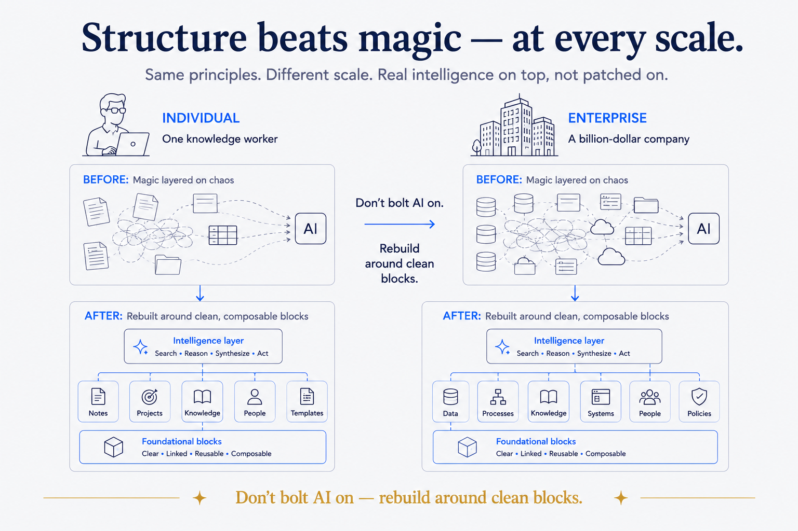
For knowledge workersA knowledge worker and a billion-dollar company reach for the same move: don't bolt AI onto what you have — rebuild around clean blocks an intelligence layer can compose.
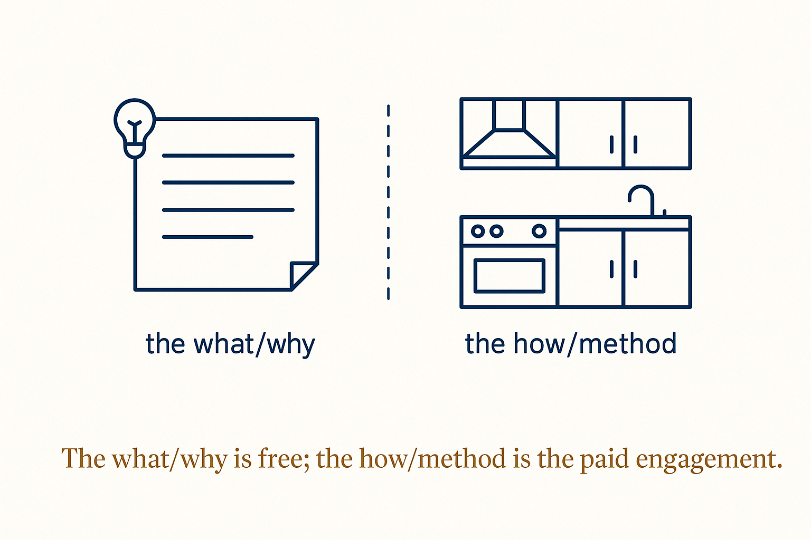
For knowledge workersPublishing your method for free doesn't give away the business — it is the business. The recipe is the ad; the kitchen is the work.
For knowledge workersThe name is a claim: a clear system beats a lucky flash of genius — in writing, in music, and most of all in what you get out of an AI.
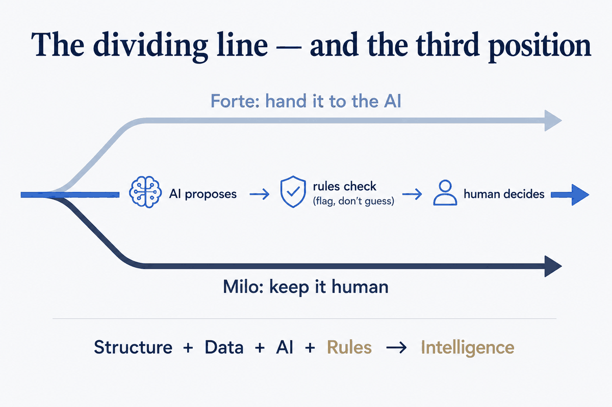
For knowledge workersThe two biggest names in PKM both bet on AI in 2026 — in opposite directions. Both are half right. The missing word is the same one missing from every 'data + AI' pitch.